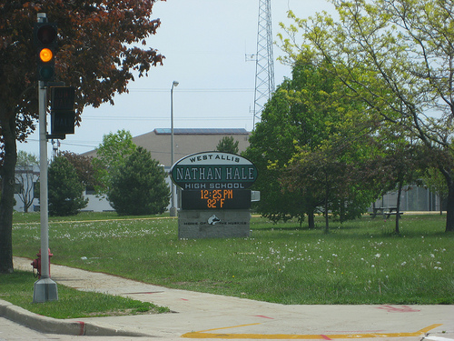

Nathan Hale Band
Nathan Hale Band
Nathan Hale High School is located in West Allis, Wisconsin, a city of more than 600,000 in the greater Milwaukee area. West Allis is home of the Wisconsin State Fair, the Milwaukee Mile and the Pettit National Ice Center. This school is home to a growing and diverse band program under the direction of Ms. Kristi M. Wicihowski.

The Nathan Hale Band program is exposed to a wide range of musical competitions, shows, and special events with a repertoire covering a wide range of genres including classical, jazz, marches, and serious wind ensemble and concert band music. The 150 member band program is thrilled to be continuing a tradition of excellence in band music that has now spanned almost 50 years.
Copyright © 2018 Pat Berard.